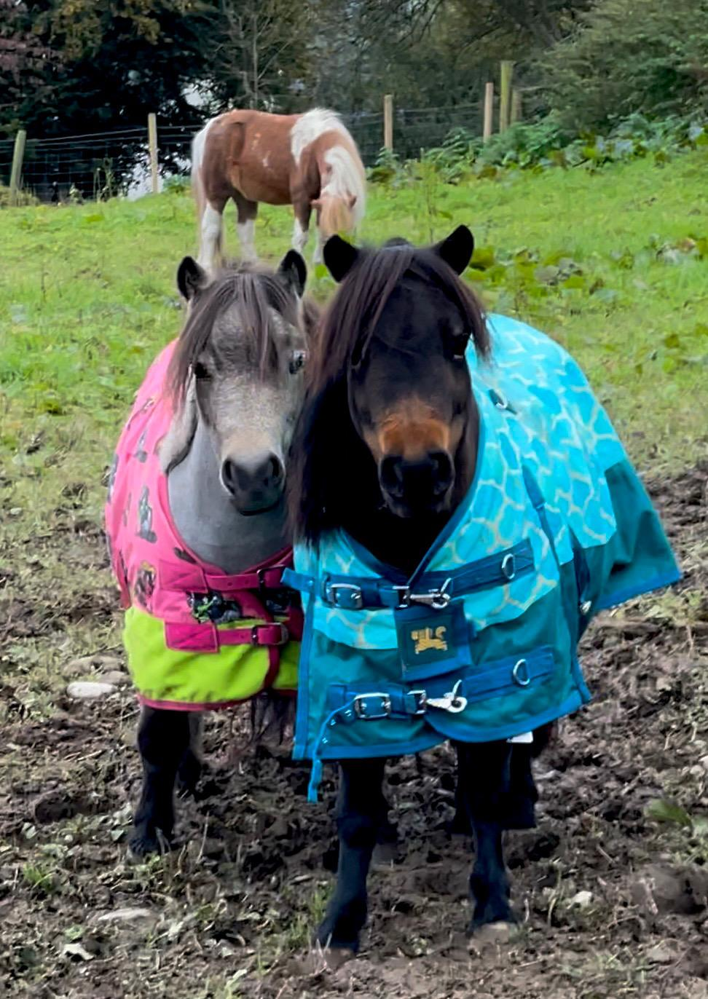

The Charity Behind the Books
Happy Hooves
Where healing begins with connection.

About Happy Hooves
Where Connection Creates Change
Happy Hooves is an equine-assisted therapy charity and sanctuary based in Culmore, on the border of Donegal, Ireland.
Home to a special herd of miniature horses, ponies and a Thoroughbred ex-racehorse, Happy Hooves uses the unique connection between people and animals to support confidence, resilience and emotional wellbeing.
Through their work, the animals provide comfort, connection and a safe space for people to learn, grow and heal.
Connection can be healing — and even the smallest moments can make a big difference.
Registered Charity: NIC110342
Follow Happy Hooves on FacebookFeatured Reports
Happy Hooves in the Media
Watch television reports featuring the Happy Hooves animals and their important work.
BBC Newsline NI
ITV News
Moments of Connection
People and the Happy Hooves Ponies
A glimpse of the visits, celebrations and everyday moments shared with our miniature therapy ponies.
A book that gives back
Every book sold helps the therapy ponies continue bringing comfort, connection and joy to those who need it.
Support Happy Hooves